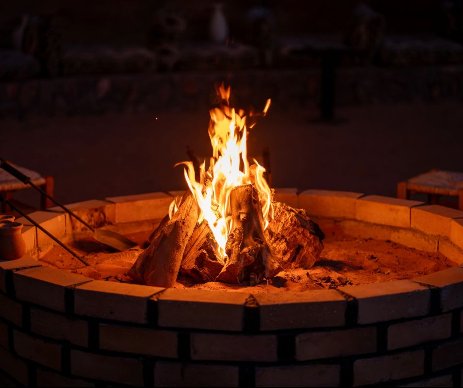
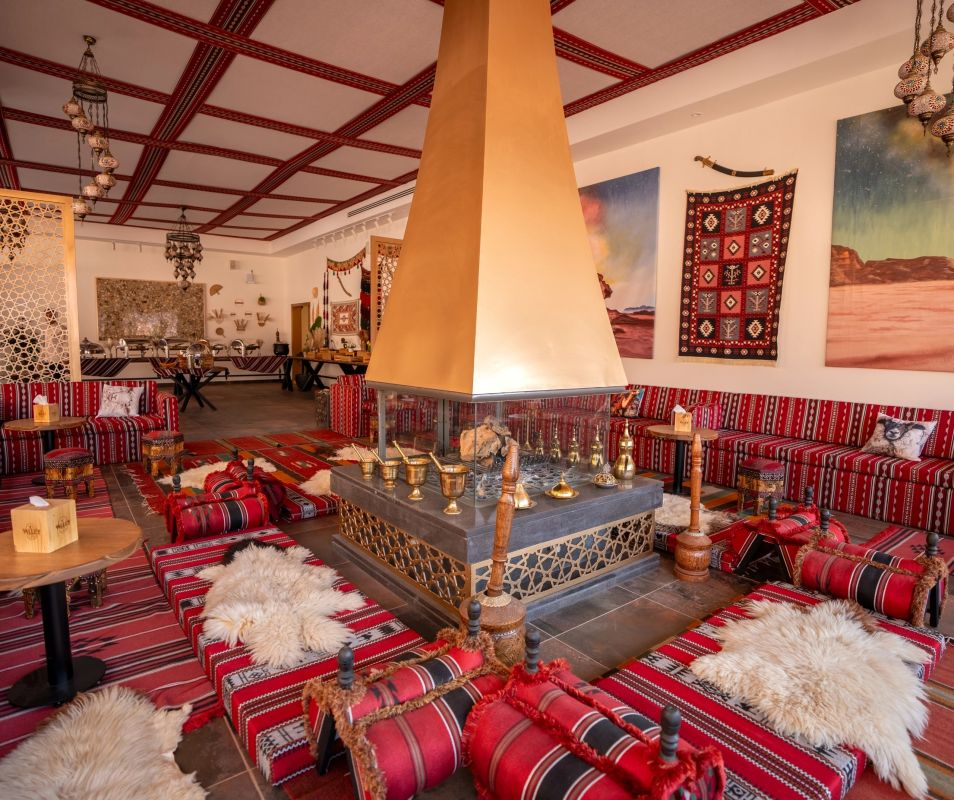

07:10
07:10First light
Morning stillness
Clear water, long shadows, nowhere else to be.
Wadi Rum, Jordan · 29.57° N
A private resort set among the sandstone valleys of Wadi Rum.
SettingInside Wadi Rum Protected Area
Ways to stayDomes · Rooms · Two-bedroom suites
Plan directlyWhatsApp the Valley team ↗

A place apart
Valley is held between ancient rock and open sky—a quiet base for slow mornings, long horizons, and nights gathered beneath the stars.
Stay atlas · 03 perspectives
Three distinct ways to meet the same landscape. Compare their defining features, then continue with the stay that fits your visit.

Perspective 01 · Dome geometry
Geometric domes frame the desert by day and the Wadi Rum sky after dark.
A day at Valley
The desert writes the itinerary. Begin slowly, follow the cliffs through the day, and gather when the sky turns dark.
07:10First light
Clear water, long shadows, nowhere else to be.
 16:30
16:30Stone & shade
Follow ancient routes or settle into the quiet.

20:45After dark
Fire, open sky, and the silence beyond.
Dining & gathering
Two different rooms for the same unhurried ritual: sharing food, warmth, and the end of the day.


Arrival made simple
Valley Resort is located inside the Wadi Rum Protected Area in Aqaba, Jordan. The team can help you plan the final part of your arrival.
Two origins. One destination.
Schematic journey map · not to scale
Independent perspective
Explore first-hand accounts on Valley Resort’s independent Tripadvisor listing.
independent reviews
Before you arrive
Essential information, grouped for quick scanning.
Check-in from 15:00
Check-out by 12:00
Airport transfer available
Wi-Fi internet access
24/7 security
Morning coffee and tea
Outdoor pool
Table games and gym
Non-smoking rooms
Room service and in-room dining
Laundry and luggage room
Travel desk and currency exchange
The desert after dark